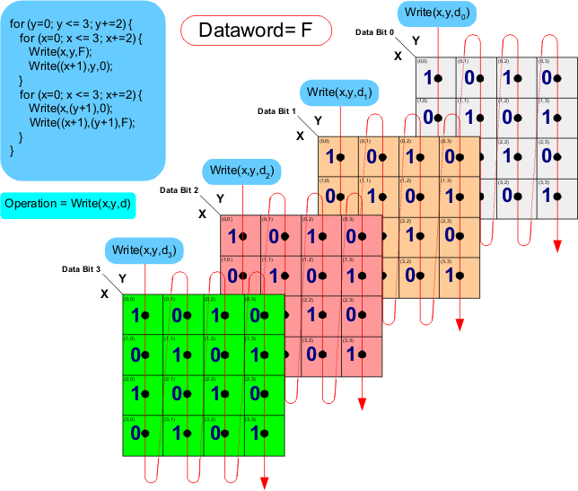

Checkerboard data sequence on four data bits
In the figure below, the code has been modified to perform a checkerboard data sequence on four data bits simply by changing the data parameter to a four-bit hex number.

In the figure below, the code has been modified to perform a checkerboard data sequence on four data bits simply by changing the data parameter to a four-bit hex number.
